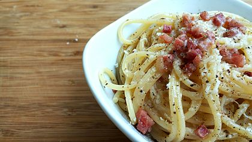

Dinner Recipes
Dinner Recipes
-
Classic Stuffed Peppers
Ingredients:
- 1/2 c. uncooked rice
- 2 tbsp. extra-virgin olive oil, plus more for drizzling
- 1 medium onion, chopped
- 2 tbsp. tomato paste
- 3 cloves garlic, minced
- 1 1/2 tsp. dried oregano
- 6 bell peppers, tops and cores removed
To serve:
- Freshly chopped parsley, for garnish
Method
Preheat oven to 400°. In a small saucepan, prepare rice according to package instructions. In a large skillet over medium heat, heat oil. Cook onion until soft, about 5 minutes. Stir in tomato paste and garlic and cook until fragrant, about 1 minute more. Add ground beef and cook, breaking up meat with a wooden spoon,until no longer pink, 6 minutes.Drain fat.Return beef mixture to skillet, then stir in cooked rice and diced tomatoes. Season with oregano, salt, and pepper. Let simmer until liquid has reduced slightly, about 5 minutes.Place peppers cut side-up in a 9"-x-13" baking dish and drizzle with oil. Spoon beef mixture into each pepper and top with Monterey jack, then cover baking dish with foil.Bake until peppers are tender, about 35 minutes.Uncover and bake until cheese is bubbly, 10 minutes more.Garnish with parsley before serving.
-
Carbonara Pasta
Ingredients:
- 12 oz. spaghetti
- 3 large eggs
- 1 c. freshly grated Parmesan, plus more for serving
- 8 slices bacon
- 2 cloves garlic, minced
- 1 1/2 tsp. dried oregano
- 6 bell peppers, tops and cores removed
To serve:
- Freshly ground black pepper
- Freshly chopped parsley, for garnish
Method
In a large pot of boiling salted water, cook pasta until al dente according to package directions. Reserve 1 cup pasta water before draining.In a medium bowl, whisk eggs and Parmesan until combined.Meanwhile, in a large skillet over medium heat, cook bacon until crispy, about 8 minutes. Reserve fat in skillet and transfer slices to a paper towel-lined plate to drain. Break into bite-size pieces.Add garlic to skillet and cook until fragrant, about 1 minute. Add cooked pasta and toss until fully coated in bacon fat. Remove from heat. Pour over egg-and-cheese mixture and stir vigorously until creamy (being careful not to scramble eggs). Add pasta water a few tablespoons at a time to loosen sauce.Season generously with salt and pepper and stir in cooked bacon.Drizzle with oil and garnish with flaky sea salt (if using), Parmesan and parsley before serving.